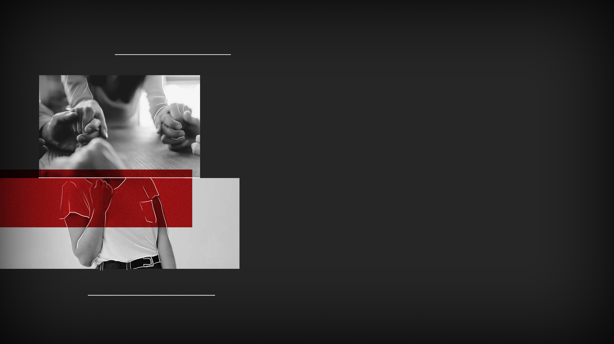

SPLITTED
SPLITTED

«I'll go.»
They both turn to look at me, weirded out.
«Nikki, two minutes ago you told me the priest has, and I quote, "gone nuts".»
«I know what I said. But I think it's good if we help him, right? Especially considering he has gone nuts.»
«He hasn't gone nuts!» my mother tries to intervene.
«I'll take care of it dad, seriously.»
My father raises his hands in a sign of resignment. He gives me two staters out of his pocket as I wait on the door.